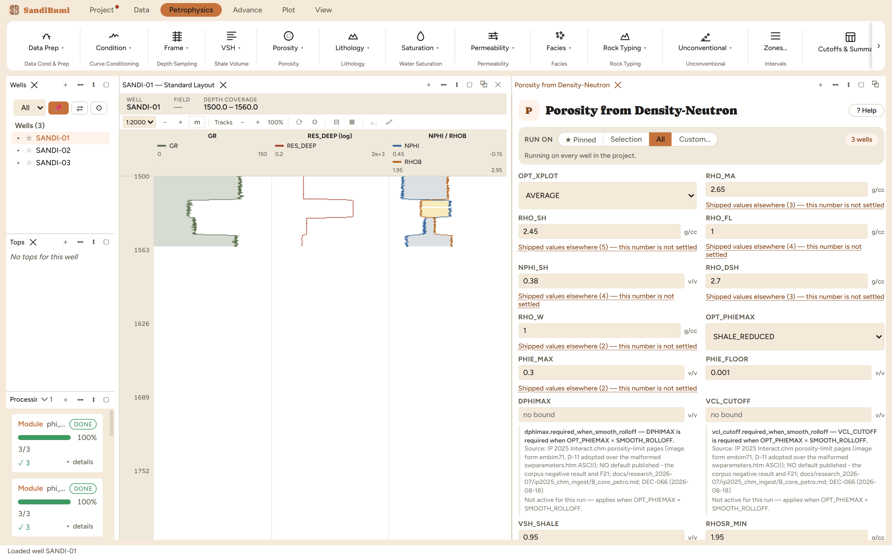
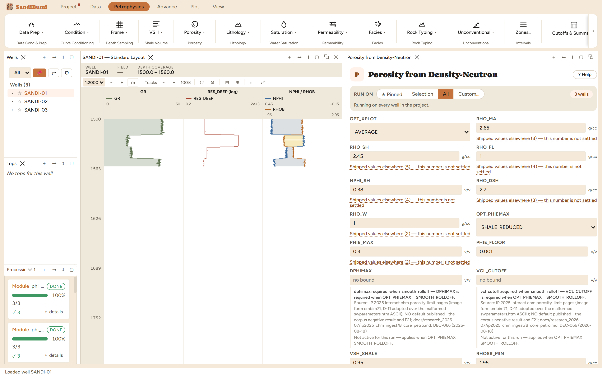

The quick-look density-neutron porosity: shale-reduce both logs, convert each to porosity, and combine them as a simple average or the gas root-mean-square. It is deliberately a comparison shortcut, not a crossplot porosity method (no vendor ships either combination as one), and the pane says so. Use it for fast screening and for gas zones where the two logs diverge; for a reporting-grade crossplot porosity use the analytic Bateman-Konen chapter that follows.
Both inputs are first shale-reduced (with clamps on the reduced values so an extreme shale point cannot launch them off the physical scale), converted to porosity, then combined: AVERAGE takes the mean, GAS_RMS takes √((PHID² + PHIN²)/2). The RMS weights the larger of the pair, so where gas has pushed density porosity up and neutron porosity down, it reads above the average, and where the two agree it equals the average exactly. That identity is worth internalizing: the combination choice only matters where the logs disagree.

3 clean, median PHIE_DN 0.1642. The instructive measurement is the combination switch, read in the right place. Switching to GAS_RMS leaves the whole-section median at exactly 0.1642, unchanged, because most of the section's density and neutron agree, and there the RMS is the average. Restricted to the gas-crossover samples the conditioning flags marked (XOVER_FLAG = 1), the median moves from 0.2004 to 0.2092:
SELECT round(median(c.value), 4) FROM computed_curves c JOIN computed_curves f ON c.well_id = f.well_id AND c.depth = f.depth AND f.curve_name = 'XOVER_FLAG' AND f.value = 1 WHERE c.curve_name = 'PHIE_DN' AND NOT isnan(c.value)
A whole-well median that never moves can hide a real effect confined to the zone that matters: measure a gas option in the gas zones.
